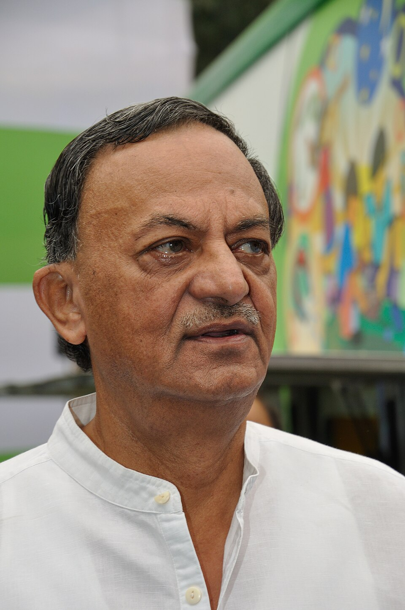
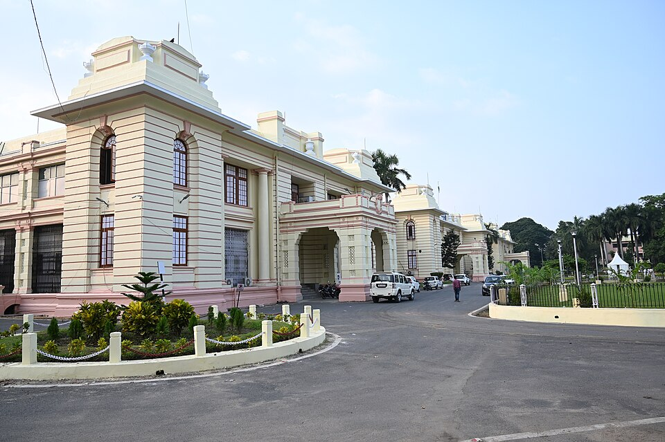
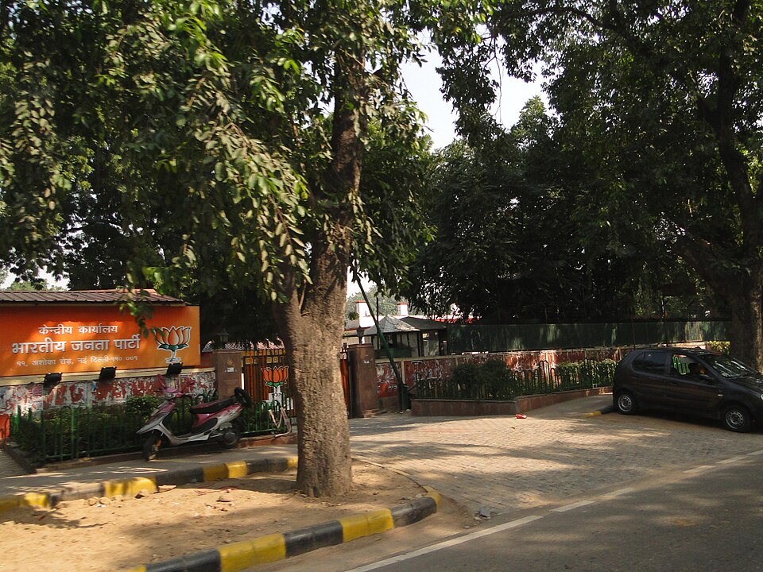

राष्ट्रीय
राष्ट्रीयभारतीय नौसेना को मिला आईएनएस विंध्यगिरि, ब्रह्मोस और बराक-8 से है लैस
भारतीय नौसेना को प्रोजेक्ट 17ए के तहत सातवां और आखिरी स्टील्थ गाइडेड मिसाइल फ्रिगेट आईएनएस विंध्यगिरि मिल गया है। कोलकाता के जीआरएसई ने शुक्रवार को इसे सौंपा।
ताज़ा ख़बरें
 राष्ट्रीय
राष्ट्रीयपरिसीमन बिल और ईडी मामलों को लेकर कांग्रेस सांसद मणिकम टैगोर का डीएमके पर हमला
कांग्रेस सांसद मणिकम टैगोर ने परिसीमन विधेयक पर रुख और ईडी मामलों को लेकर डीएमके पर सवाल उठाए हैं। उन्होंने पूछा कि डीएमके का रुख अचानक नरम क्यों हो गया है।
राष्ट्रीयदिल्ली पुलिस ने जैश-ए-मोहम्मद के संदिग्ध को किया गिरफ्तार, जांच जारी
दिल्ली पुलिस की स्पेशल सेल ने जैश-ए-मोहम्मद से जुड़े एक संदिग्ध को गिरफ्तार किया है। शुरुआती जांच में आशंका है कि उसे सोशल मीडिया के जरिए भर्ती किया गया था।
 राष्ट्रीय
राष्ट्रीयसंसद में पेश होने वाले महिला आरक्षण और परिसीमन विधेयक के मुख्य बिंदु
संसद में पेश होने वाले नए परिसीमन और महिला आरक्षण विधेयक के अनुसार, अधिनियम लागू होने के बाद केंद्र सरकार जल्द ही एक परिसीमन आयोग का गठन करेगी।

राष्ट्रीयशाहरुख खान की फिल्म 'किंग' का गाना 'डैडी कूल' 1996 की फिल्म से जुड़ा है
शाहरुख खान और करीना कपूर की फिल्म 'किंग' का नया गाना 'डैडी कूल' रिलीज हो गया है। इस गाने का कनेक्शन अभिनेता की 1996 की एक पुरानी फिल्म से है।
 राष्ट्रीय
राष्ट्रीयसुप्रीम कोर्ट के आदेश पर पीएम मोदी ने की भगवान मुरुगन की जय
सुप्रीम कोर्ट द्वारा मदुरै के तिरुपकुंद्रम पहाड़ी पर कार्तिकई दीपम दीया जलाने का आदेश दिए जाने के बाद प्रधानमंत्री नरेंद्र मोदी ने सोशल मीडिया पर भगवान मुरुगन का स्मरण किया।
राष्ट्रीयसाहित्य आजतक 2026: कवयित्री मनिका दुबे ने गजल और शायरी से बांधा समां
‘साहित्य आजतक 2026’ के पहले दिन कवयित्री और संगीतकार मनिका दुबे ने ‘शहर के शोर में’ सत्र के दौरान अपनी गजलों और कविताओं से श्रोताओं का मन मोह लिया।
राष्ट्रीयफिल्म निर्माता सूरज बड़जात्या ने बताया क्यों उनकी फिल्मों में होता है 'प्रेम' नाम
निर्देशक सूरज बड़जात्या ने हाल ही में एक इंटरव्यू में बताया कि उनकी फिल्मों में मुख्य किरदार का नाम हमेशा 'प्रेम' क्यों रखा जाता है। उन्होंने 1977 की एक हिट फिल्म से इस नाम के जुड़ाव का खुलासा किया।
 राष्ट्रीय
राष्ट्रीयदिल्ली एयरपोर्ट पर बेल्ट के बकल में छिपा चाकू बरामद, हांगकांग से आया यात्री पकड़ा गया
दिल्ली के इंदिरा गांधी अंतरराष्ट्रीय हवाई अड्डे पर सीआईएसएफ की सतर्कता से एक यात्री को पकड़ा गया, जिसके पास बेल्ट के बकल में छिपाकर चाकू रखा गया था।
राष्ट्रीयसंसद में सीटों की संख्या बढ़ाने के प्रस्ताव का नायडू ने किया समर्थन
आंध्र प्रदेश के मुख्यमंत्री एन. चंद्रबाबू नायडू ने लोकसभा सीटों में 50 प्रतिशत बढ़ोतरी और महिला आरक्षण विधेयक का समर्थन किया है। उन्होंने इसे राजनीतिक सशक्तिकरण का ऐतिहासिक अवसर बताया।
राष्ट्रीयसरकारी स्कूलों के शिक्षकों से गैर-शैक्षणिक काम कराने पर उठ रहे सवाल
शिक्षा का अधिकार कानून के बावजूद देश के सरकारी स्कूलों के शिक्षकों को जनगणना, चुनाव और सर्वे जैसे प्रशासनिक कामों में लगाया जा रहा है, जिससे बच्चों की पढ़ाई प्रभावित हो रही है।
अंतरराष्ट्रीयवैवाहिक बलात्कार: भारत समेत दक्षिण एशिया के कई देशों में महिलाओं को क्यों नहीं मिली कानूनी सुरक्षा
एक नई स्टडी के अनुसार, भारत और पाकिस्तान समेत दक्षिण एशिया के कई देशों में मैरिटल रेप को अपराध नहीं माना गया है, जिससे लाखों महिलाएं कानूनी सुरक्षा से वंचित हैं।
व्यापारभारत में ईंधन कीमतों के संकट का दौर समाप्त होने की उम्मीद: आईओसीएल चेयरमैन
इंडियन ऑयल कॉरपोरेशन के चेयरमैन अरविंदर सिंह साहनी ने कहा कि भारत ईंधन कीमतों के सबसे मुश्किल दौर से बाहर आ चुका है। हालांकि, यह राहत वैश्विक भू-राजनीतिक हालात पर निर्भर करती है।
राष्ट्रीयतमिलनाडु: कल्लाकुरिची कलेक्टर को अशील मैसेज भेजने के आरोप में TVK विधायक गिरफ्तार
तमिलनाडु के कल्लाकुरिची जिले में कलेक्टर को कथित तौर पर अशील संदेश भेजने के मामले में टीवीके विधायक सी. अरुल विग्नेश को गिरफ्तार कर लिया गया है। मद्रास हाईकोर्ट के निर्देश पर इस मामले की जांच की जा रही है।
राष्ट्रीयमोहन भागवत बोले, अहंकार ‘मैं और मेरा’ तक सीमित है, दया से हल होंगी समस्याएं
RSS प्रमुख मोहन भागवत ने दिल्ली में एक कार्यक्रम के दौरान कहा कि रावण और राम में मुख्य अंतर अहंकार और दया का है। उन्होंने वैश्विक और घरेलू चुनौतियों से निपटने के लिए समाज से आपसी जुड़ाव बढ़ाने की अपील की।
राष्ट्रीयशाहरुख खान और करीना कपूर फिल्म 'किंग' के नए गाने में आए नजर
अभिनेता शाहरुख खान और अभिनेत्री करीना कपूर फिल्म 'किंग' के नए गाने 'डैडी कूल' में साथ नजर आए हैं। इस गाने को मुंबई में 27 नवंबर को लॉन्च किया गया, जिसे सोशल मीडिया पर सकारात्मक प्रतिक्रिया मिल रही है।

राष्ट्रीयराजद सांसद सुरेंद्र प्रसाद यादव के परिसीमन वाले बयान पर सफाई
राजद सांसद सुरेंद्र प्रसाद यादव के परिसीमन के समर्थन वाले बयान से राजनीतिक चर्चा शुरू हो गई थी। बाद में उन्होंने स्पष्ट किया कि उनकी बात लोकसभा नहीं बल्कि बिहार में पंचायतों के परिसीमन से जुड़ी थी।
 अंतरराष्ट्रीय
अंतरराष्ट्रीयभारत और बांग्लादेश के बीच गंगा जल संधि का भविष्य और चुनौतियां
भारत और बांग्लादेश के बीच 30 साल पुरानी गंगा जल संधि 12 दिसंबर 2026 को समाप्त हो रही है। दोनों देशों के सामने नए और टिकाऊ सहयोग ढांचे को तैयार करने की बड़ी चुनौती है।
राष्ट्रीयरावण 'मैं और मेरा' में अटका रहा, राम करुणा के प्रतीक: मोहन भागवत
आरएसएस प्रमुख मोहन भागवत ने दिल्ली में एक पुस्तक लोकार्पण समारोह में कहा कि रावण अहंकार में अटका रहा, जबकि भगवान राम करुणा के प्रतीक थे। उन्होंने कहा कि पूरी दुनिया के सुखी रहने पर ही मानव जाति सुखी रह सकती है।

राष्ट्रीयदिल्ली में भाजपा की दो दिवसीय संगठनात्मक कार्यशाला शुरू, चुनावों की रणनीति पर मंथन
दिल्ली के पूसा में भाजपा की दो दिवसीय संगठनात्मक कार्यशाला शुरू हो गई है। प्रधानमंत्री नरेंद्र मोदी और पार्टी अध्यक्ष नितिन नवीन समेत कई वरिष्ठ नेता इसमें शामिल हो रहे हैं।
 राष्ट्रीय
राष्ट्रीयचेन्नई के कारोबारी वर्द्धमान जैन ने तिरुपति मंदिर को दिया ₹207 करोड़ का सोना
चेन्नई के कारोबारी वर्द्धमान जैन और उनकी पत्नी राधिका जैन ने तिरुपति मंदिर को 121 किलो सोना और हीरे के आभूषण दान किए हैं, जिनकी कीमत करीब ₹207 करोड़ है।
राष्ट्रीयउत्तर प्रदेश विधानसभा चुनाव: एनडीए में सीट शेयरिंग को लेकर सहयोगियों की बढ़ी मांग
उत्तर प्रदेश विधानसभा चुनाव से पहले एनडीए में सीट बंटवारे को लेकर पेच फंस गया है। बीजेपी के चार सहयोगी दल अपना दल (एस), आरएलडी, सुभासपा और निषाद पार्टी अधिक सीटों की मांग कर रहे हैं, जिससे बीजेपी के सामने संतुलन बनाने की चुनौती खड़ी हो गई है।
राष्ट्रीयपरिसीमन और महिला आरक्षण पर कांग्रेस ने सरकार को घेरा, संविधान बदलने का लगाया आरोप
महिला आरक्षण और परिसीमन से जुड़े विधेयक को कैबिनेट की मंजूरी मिलने पर कांग्रेस ने तीखी प्रतिक्रिया दी है। पार्टी ने आरोप लगाया कि सरकार इसके बहाने संविधान बदलना चाहती है और लोकसभा सीटों का मौजूदा संतुलन बनाए रखने की मांग की है।
राष्ट्रीयतमिलनाडु: महिला आईएएस अधिकारी को अश्लील मैसेज भेजने के आरोप में टीवीके विधायक गिरफ्तार
तमिलनाडु में टीवीके विधायक अरुल विग्नेश को एक महिला जिला कलेक्टर को अश्लील मैसेज भेजने के आरोप में शुक्रवार देर शाम पुलिस ने गिरफ्तार कर लिया। इस मामले को लेकर पिछले कई दिनों से राजनीतिक हंगामा चल रहा था।
राष्ट्रीयपूर्व वायुसेना उप प्रमुख एयर मार्शल नागेश कपूर का डीपफेक वीडियो वायरल, पीआईबी ने दी चेतावनी
पीआईबी फैक्ट चेक ने स्पष्ट किया है कि पूर्व वायुसेना उप प्रमुख एयर मार्शल नागेश कपूर का एक वीडियो सोशल मीडिया पर वायरल हो रहा है, जिसमें भारतीय विमानों और एयर डिफेंस सिस्टम के नुकसान का दावा किया गया है। यह पूरी तरह फर्जी और डीपफेक है।
 अंतरराष्ट्रीय
अंतरराष्ट्रीयअमेरिकी वायुसेना के प्रमुख क्लाउड प्लेटफॉर्म 'क्लाउड वन' पर साइबर हमला
अमेरिकी वायुसेना के प्रमुख क्लाउड कंप्यूटिंग प्लेटफॉर्म 'क्लाउड वन' में सेंधमारी का मामला सामने आया है। इस घटना से संवेदनशील सैन्य डेटा और लॉजिस्टिक्स प्रभावित होने की आशंका है।
 खेल
खेलरोहित शर्मा बने मुंबई इंडियंस के कप्तान, आईपीएल 2027 के लिए टीम ने किया ऐलान
मुंबई इंडियंस ने आधिकारिक घोषणा करते हुए रोहित शर्मा को आईपीएल 2027 के लिए टीम का कप्तान नियुक्त किया है। फ्रेंचाइजी ने आगामी सीजन से पहले 16 खिलाड़ियों को रिटेन भी किया है।
खेलIPL 2027: मुंबई इंडियंस ने रोहित शर्मा को फिर सौंपी टीम की कमान
आईपीएल 2027 से पहले मुंबई इंडियंस ने अनुभवी बल्लेबाज रोहित शर्मा को एक बार फिर टीम का कप्तान नियुक्त किया है। उनकी कप्तानी में टीम ने पांच बार खिताब जीता है।
राष्ट्रीयमहिलाओं में बार-बार यूटीआई की समस्या, जानें इसके प्रमुख कारण और बचाव
महिलाओं में यूरिनरी ट्रैक्ट इन्फेक्शन यानी यूटीआई की समस्या आम है। सफदरजंग अस्पताल की पूर्व डॉक्टर सलोनी के अनुसार, लंबे समय तक पेशाब रोकना, सेक्सुअल एक्टिविटी और मेनोपॉज इसके मुख्य कारण हैं।
 खेल
खेलतीसरे टी20 में इंग्लैंड ने ऑस्ट्रेलिया को 7 विकेट से हराया
गाबा में खेले गए तीसरे टी20 मुकाबले में इंग्लैंड ने ऑस्ट्रेलिया को 7 विकेट से हराकर पांच मैचों की सीरीज में 2-1 की बढ़त बना ली है। जैमी ओवरटन ने शानदार गेंदबाजी करते हुए 5 विकेट लिए।
 व्यापार
व्यापारबॉम्बे हाईकोर्ट में टाटा ट्रस्ट्स की अपील, 30 नवंबर की टाटा संस मीटिंग टालने की मांग
टाटा ट्रस्ट्स ने बॉम्बे हाईकोर्ट में याचिका दायर कर 30 नवंबर को होने वाली टाटा संस की बोर्ड मीटिंग को स्थगित करने की मांग की है। ट्रस्ट ने चेयरमैन एन. चंद्रशेखरन के दोबारा नियुक्ति पर विवाद उठाया है।
राष्ट्रीयसूरज बड़जात्या की फिल्म 'ये प्रेम मोल लिया' ने पहले दिन कमाए ₹1.64 करोड़
आयुष्मान खुराना और शर्वरी अभिनीत पारिवारिक ड्रामा फिल्म 'ये प्रेम मोल लिया' ने पहले दिन घरेलू बॉक्स ऑफिस पर ₹1.64 करोड़ का नेट कलेक्शन किया है।
 राष्ट्रीय
राष्ट्रीयसुप्रीम कोर्ट का निर्देश, तिरुपरनकुंद्रम पहाड़ी पर 28 नवंबर को जलेगा दीपक
सुप्रीम कोर्ट ने तमिलनाडु के तिरुपरनकुंद्रम पहाड़ी पर 28 नवंबर को दीपक जलाने का आदेश दिया है। अदालत ने मंदिर के ट्रस्टियों के बोर्ड को निलंबित कर दिया है और सुरक्षा का जिम्मा सीआरपीएफ को सौंपा है।
राष्ट्रीयऑपरेशन सिंदूर भविष्य के युद्ध का टेम्प्लेट, तकनीक और समन्वय सबसे अहम: CDS
CDS जनरल एनएस राजा सुब्रमणि ने कहा कि भविष्य के युद्ध जमीन, आसमान और समुद्र में एक साथ लड़े जाएंगे। उन्होंने भारत के लिए स्वतंत्र रक्षा मॉडल तैयार करने पर जोर दिया।
अंतरराष्ट्रीयपाकिस्तान में सऊदी अरब और तुर्किए के साथ त्रिपक्षीय रक्षा बैठक आज
इस्लामाबाद में शुक्रवार को पाकिस्तान, सऊदी अरब और तुर्किए के बीच त्रिपक्षीय रक्षा समझौते के तहत अहम बैठक होगी, जिसमें क्षेत्रीय सुरक्षा और सैन्य सहयोग पर चर्चा की जाएगी।
टेकAirtel, Jio और Vi के इन रीचार्ज प्लान्स में मिल रहा है Amazon Prime का सब्सक्रिप्शन
एयरटेल, जियो और वोडाफोन आइडिया (Vi) के चुनिंदा प्रीपेड रीचार्ज प्लान्स में ग्राहकों को बिना किसी अतिरिक्त शुल्क के अमेजन प्राइम का सब्सक्रिप्शन मिल रहा है। इन प्लान्स की शुरुआती कीमत ₹696 है।
 राष्ट्रीय
राष्ट्रीयIPS लक्ष्मी सिंह बनीं गाजियाबाद की पुलिस कमिश्नर, नोएडा में रहा सबसे लंबा कार्यकाल
वर्ष 2000 बैच की आईपीएस अधिकारी लक्ष्मी सिंह को नोएडा के पुलिस कमिश्नर पद से हटाकर गाजियाबाद की जिम्मेदारी सौंपी गई है। वह नोएडा की पहली महिला पुलिस कमिश्नर थीं।
 राष्ट्रीय
राष्ट्रीयकलकत्ता हाईकोर्ट ने पश्चिम बंगाल विधानसभा में नेता प्रतिपक्ष की नियुक्ति रद्द की
कलकत्ता हाईकोर्ट ने पश्चिम बंगाल विधानसभा में ऋतब्रत बनर्जी की नेता प्रतिपक्ष के रूप में नियुक्ति को रद्द कर दिया है। अदालत ने विधानसभा अध्यक्ष को नियमों के तहत नए सिरे से निर्णय लेने का निर्देश दिया है।
राष्ट्रीयकलकत्ता हाईकोर्ट ने पश्चिम बंगाल विधानसभा में नेता प्रतिपक्ष की नियुक्ति को किया खारिज
कलकत्ता हाईकोर्ट ने पश्चिम बंगाल विधानसभा में रितब्रत बनर्जी को नेता प्रतिपक्ष और अखरूजमां को मुख्य सचेतक बनाने के स्पीकर के आदेश को रद्द कर दिया है। अदालत ने 10 दिन के भीतर नए सिरे से फैसला लेने का निर्देश दिया है।
खेलजैमी ओवरटन बने टी20 अंतरराष्ट्रीय में पांच विकेट लेने वाले दूसरे इंग्लिश गेंदबाज
ऑस्ट्रेलिया के खिलाफ तीसरे टी20 मुकाबले में इंग्लैंड के गेंदबाज जैमी ओवरटन ने शानदार प्रदर्शन करते हुए चार ओवरों में मात्र 12 रन देकर पांच विकेट झटके और इतिहास रच दिया।